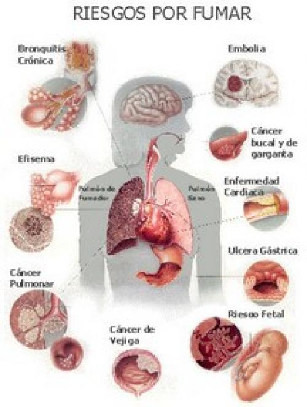
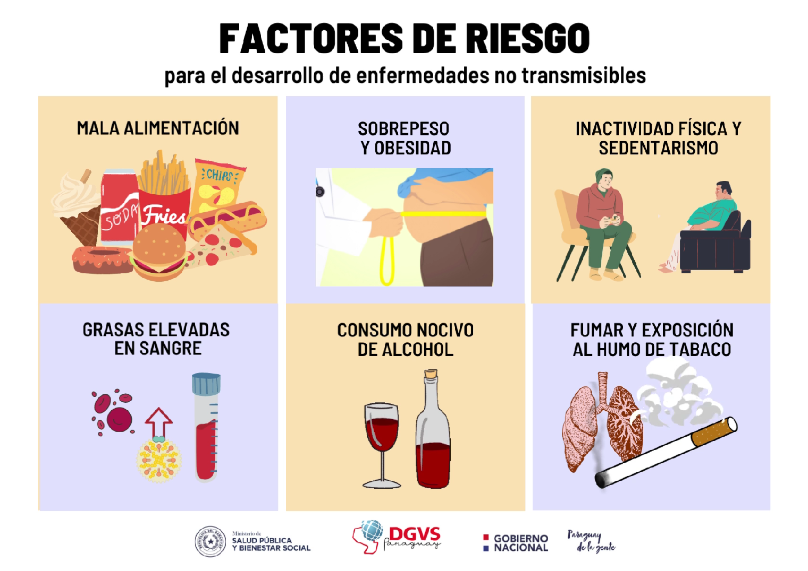
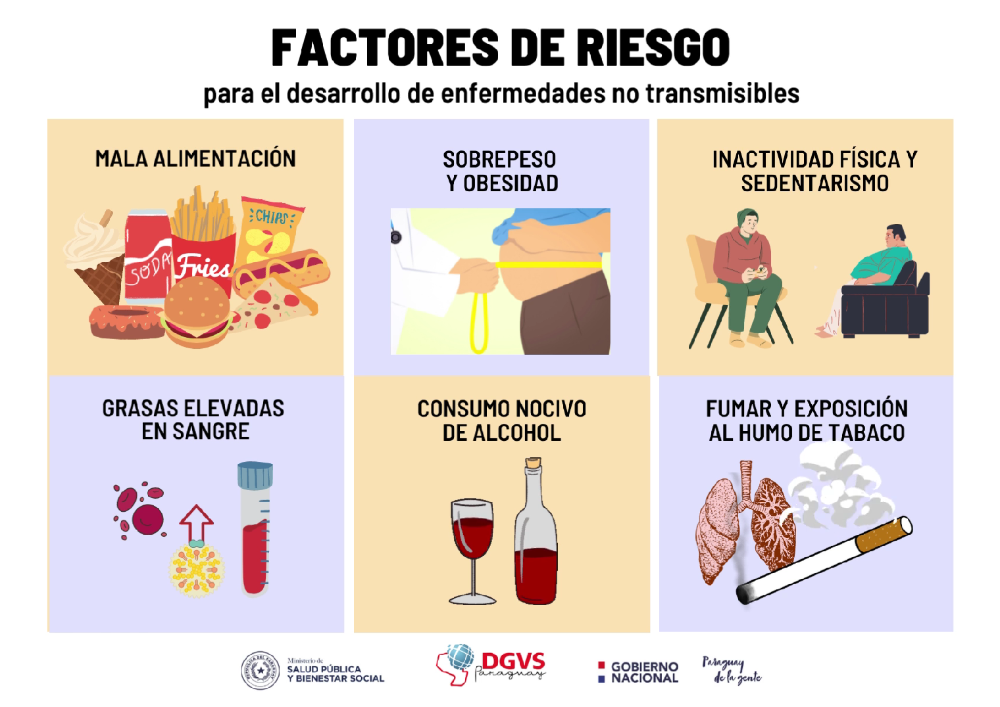

Cualquier persona que fume o consuma otras formas de tabaco corre el riesgo de convertirse en una persona dependiente de la nicotina. Los factores que influyen en quiénes consumen tabaco incluyen:
- Edad. La mayoría de las personas empiezan a fumar durante la infancia o la adolescencia. Cuanto más joven seas cuando empieces a fumar, mayores serán las posibilidades de que te vuelvas adicto.
- Genética. La probabilidad de que empieces a fumar y sigas fumando puede ser parcialmente heredado. Los factores genéticos pueden influir en la forma en que los receptores de la superficie de las células nerviosas del cerebro responden a las altas dosis de nicotina que suministran los cigarrillos.
- Padres y compañeros. Los niños que crecen con padres que fuman tienen más probabilidades de convertirse en fumadores. Los niños con amigos que fuman también son más propensos a intentarlo.
- Depresión u otra enfermedad mental. Muchos estudios muestran una asociación entre la depresión y el tabaquismo. Las personas que tienen depresión, esquizofrenia, trastorno de estrés postraumático u otras formas de enfermedad mental tienen más probabilidades de ser fumadores.
- Uso de sustancias. Las personas que abusan del alcohol y de las drogas ilegales tienen más probabilidades de ser fumadores.
 
